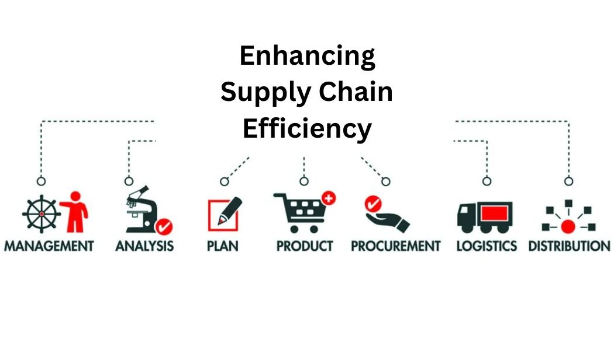

Gen AI Powered Job Transition Pathway
- Led a data science initiative developing an AI-driven job transition pathway using generative LSTM models.
- Integrated data from multiple sources (Indeed, Udemy, EMSI) and employed SpaCy for NLP-based data cleaning and a custom fuzzy matching algorithm for associating job stages with skill sets.
- Utilized BERT embeddings in a Seq2Seq LSTM framework for nuanced comprehension of job descriptions, ensuring the model's deep linguistic comprehension for accurate job and skill predictions.
Learn more
Ranked Stack Overflow: Mathematics and Statistical Analysis
- Developed an advanced re-ranker for NLP analysis on 5M+ Stack Overflow threads, boosting answer retrieval accuracy by 64%.
- Implemented ML models for content tagging, achieving 96% precision, and deployed 'all-MiniLM-L6-v2' and 'all-mpnet-base-v2' transformer models for enhanced semantic relevance.
Learn more

Improving Supply Chain Efficiency in the Market via Predictive Analytics Techniques
- Built a statistical ML forecasting model (ARIMA model, along with regression analysis models) on historical data of sales, inventory, & production to identify trends, seasonality, and other patterns. This helped with identifying potential supply chain disruptions and enabled us to take preventive measures, such as alternate sourcing or safety stock planning. Examined and modified the data to result in a range of useful visual insights using Tableau, and Python.
Learn more
Analysis of Energy Consumption by departments in San Jose
- The analysis utilizes MySQL Workbench and AWS Cloud architecture to examine energy consumption data from San Jose city departments. Initial MySQL queries analyze electricity usage, peak demand, and energy intensity. AWS Cloud workflow includes S3 bucket creation, data import via AWS Glue jobs, and Redshift database.
Further queries explore costs, natural gas usage, preferred utilities, and solar-powered departments. MongoDB stores Address, Electricity Usage, and Building Area tables, with Tableau visualizations depicting global power consumption, departmental comparisons, and building insights. Key findings inform green renovations and aim to reduce energy consumption in San Jose, aligning with climate change efforts.
Learn more

AI Chatbot for Applied Data Science department
- Led the development of an advanced chatbot using GPT-3.5 and Transformer models, trained on a dataset of 370,000 academic interactions. Achieved a 35% increase in response accuracy and 20% boost in user satisfaction. Implemented Python automation tools for data collection and optimized models, resulting in a 40% increase in text processing efficiency and 25% reduction in variance. Rigorous testing yielded an SAS of 0.79 and BLEU score of 0.76, showcasing substantial improvements in semantic understanding and linguistic precision within the educational domain.
Learn more
Beyond the numbers : Deep Dive into Sports Performance Metrics
- Developed a cricket player performance analysis system utilizing big data and cloud computing. Employed Python, AWS services (S3, Glue, Redshift), and Tableau for data processing and visualization. Designed a nine-table data model capturing match, team, and player details. Implemented a Django-based website for interactive exploration.
- Conducted ETL process, built a Redshift data model, and created a secure web app. Tableau visualizations showcased insights like runs scored, run rate, and player stats. The system was prompt, dependable, and user-friendly. Future plans include integrating more data sources and real-time data, and incorporating machine learning for predictive analytics.
Learn more